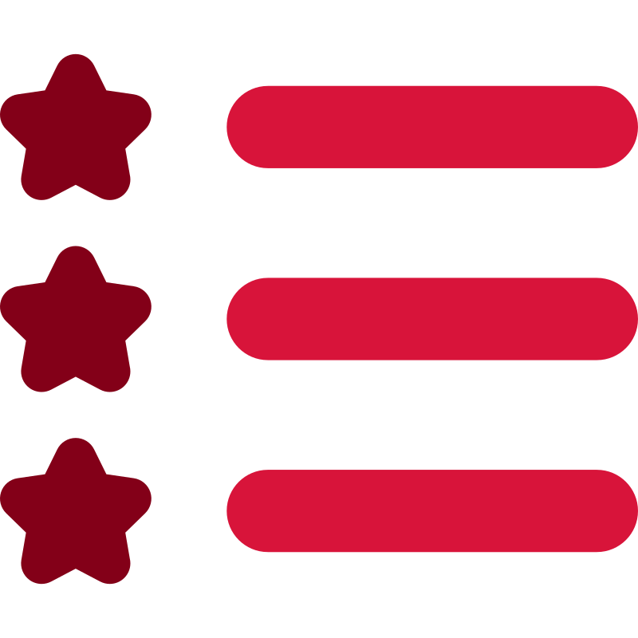

Alfredo Revilla
BSIT, ITIL V4 Certified, Application Support Engineer

I am a proactive Information Technology professional with a Bachelor of Science degree from the University of the
Cordilleras, Philippines, and over 6 years of experience in diverse industries including Insurance, Healthcare, Law, and Real
Estate. Driven by a passion for technology and a commitment to excellence, I am eager to contribute my skills and expertise
to a forward-thinking company. I am seeking a dynamic environment where I can leverage my capabilities to support and achieve the company's objectives while advancing my own career aspirations. I am confident that my dedication,
adaptability, and problem-solving abilities will make me a valuable asset to your team.
Education
Bachelor of Science in Information Technology, University of the Cordilleras, Philippines 2004 - 2010
Certifications
ITIL V4 Foundation Certificate Number: GR671461044AR
Work Experience

Deep Blue Company (Real Estate, Law)
Application Support Engineer, 2021 - Present
- Working together with various teams (Software Developers, Processing, Operational Leads and Business Analysts) with a goal of process improvements in AGILE methodology to deliver a more refined effective processes to our stakeholder
- Created and managed PHP scripts used in CRM document and email templates as part of process automation
- Initiated the creation of automated document and email templates used in CRM applications
- Managing CRM data, settings, user/account, roles and permissions
- Acted as the Project Manager for the creation of an electronic signature signing of documents and served as the custodian
of the process, manages Smart Tag codes on these documents
- Launched automations using 3rd party applications (Zapier, Typeform, Twilio, etc.)
- Managing Powershell, Python and PHP scripts
Desktop Support, 2019 - 2021
- Supporting Cloud platforms like GSuite, AWS and M365
- Supporting VOIP/PBX Applications like VICIDial, FreePBX, GOTOConnect and NICE inContact
- Provided level 1 support to the user's hardware setup and issues, and various software issue resolutions using ManageEngine
PSSolutions (Healthcare)
System Support Engineer, 2018 - 2019
- Maintains data integrity and updates database using Microsoft SQL Server Management Studio
- Provides Laboratory Information System (LIS) support to end users from patient registration to sending of reports
- Provides software and hardware support (i.e. printer, connectivity, Windows, Microsoft office, email setup issues etc.)
- Setup and troubleshooting of laboratory machine's connectivity to LIS system. Experienced handling laboratory machines such as Maglumi800, Cobas, Advia, Centaur, Versacell etc.
- Provides support to medical insurance team regarding submission and re-submission with knowledge of LOINC codes, CPT codes and Diagnosis codes.
- Supports generation and updates of medical laboratory reports using Crystal Report.
QBE GSSC (General Insurance)
Senior Customer Support Officer/SME, 2016 - 2017
Customer Support Officer, 2013 - 2016
WNS Global Services (Finance)
Customer Support Agent, 2011 - 2012
Skills

Hard Skills
Cloud Computing Platforms(AWS, GSuite, M365), PBX Systems (VICIDial, FreePBX, GOTOConnect, NICEinContact), CRM (Actionstep, Pipedrive), HTML, CSS, PHP, Python, SQL, Powershell, Windows/MAC (OS), JIRA, Confluence, ManageEngine, Zapier, Typeform, Twilio, Microsoft SQL Server, SSMS
Soft Skills
Creative, Self-Motivated, Active listener, Collaborative, Analytical, Decision making, Logical reasoning, Research, Mentorship, Versatility